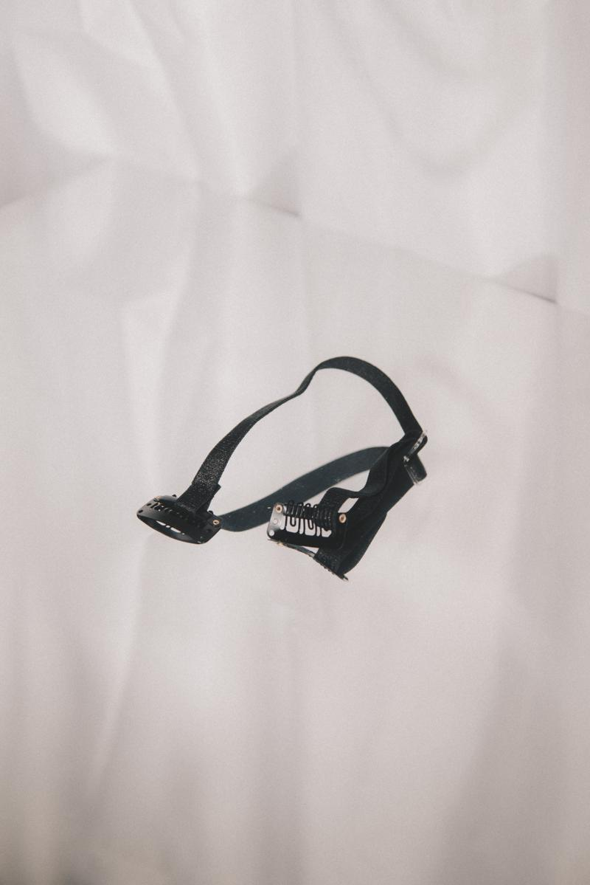
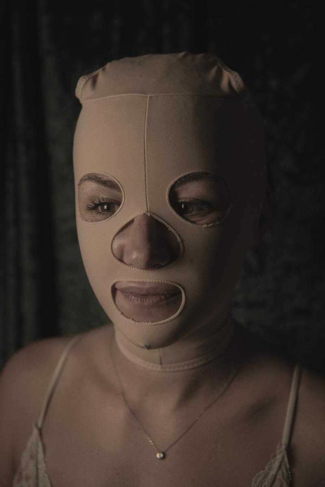
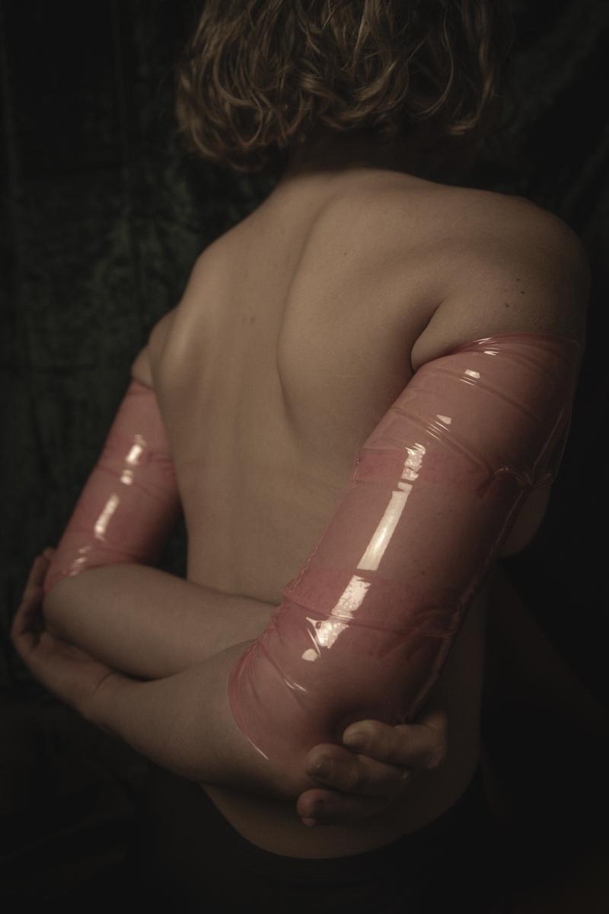
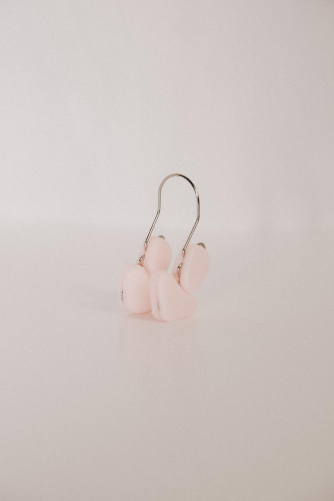

ANAESTHETIC BEAUTY
Ciò che vediamo riflesso allo specchio, che modella e codifica la nostra individualità, è la percezione che abbiamo di noi, poiché oltre che guardare siamo allo stesso tempo anche guardati e questa consapevolezza ci aiuta a percepire e modellare quello che il nostro occhio vede e analizza.
Come scrive J.Berger nel libro “Questione di sguardi” - La pubblicità come sistema propone una e una sola cosa. Propone a ciascuno di noi di trasformarsi o di trasformare la propria vita, comprando qualcosa di più. Questo qualcosa in più, essa suggerisce, ci renderà in qualche modo più ricchi, anche se saremo più poveri perché avremo speso dei soldi. La pubblicità ci persuade a tale trasformazione mostrandoci persone che hanno l’aria di essersi trasformate che risultano dunque invidiabili […] La sua non è una promessa di piacere, ma di felicità: felicità misurata dall’esterno, con il metro di giudizio degli altri. La felicità di essere invidiati e glamour. -
Quando ogni immagine, ogni persona o pubblicità dice il tuo corpo è anormale, finirai col crederci e comincerai a percepirlo davvero come sbagliato, te ne vergognerai e sentendoti costantemente sotto giudizio cercherai un modo per conformarti. Diventiamo allo stesso tempo vittime e carnefici del “mito della bellezza”.
La bellezza, non più una questione puramente estetica, diventa in questo modo un’azione politica di potere, costantemente bombardati dall’idea che un prodotto possa renderci felici, che trasformandoci in qualcosa di diverso, invidiando la proiezione del modello migliore che saremo, ci sentiremo perfezionati e allora capaci di amarci.
Superando il concetto di estetica, veniamo in questo modo anestetizzati dal concetto di bellezza, incapaci di non vedere e sempre più vulnerabili a inganni ed illusioni di un qualcosa che possa cambiarci.
Anestetici beauty nasce dal voler analizzare proprio questo mondo di finzione dove pubblicità ingannevoli idolatrano strani oggetti come miracolosi al fine del nostro miglioramento.



